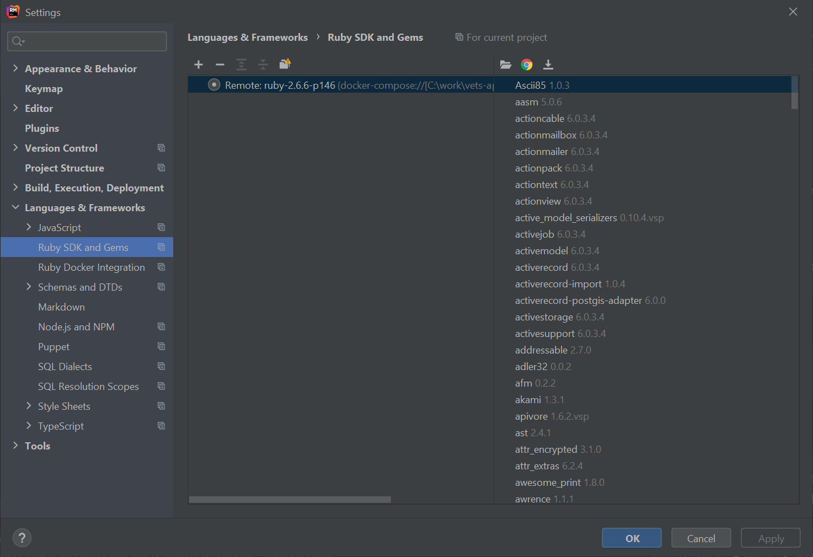
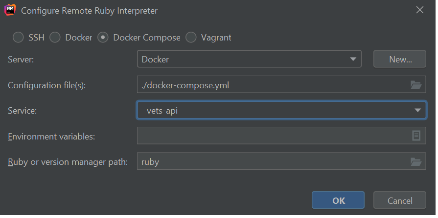
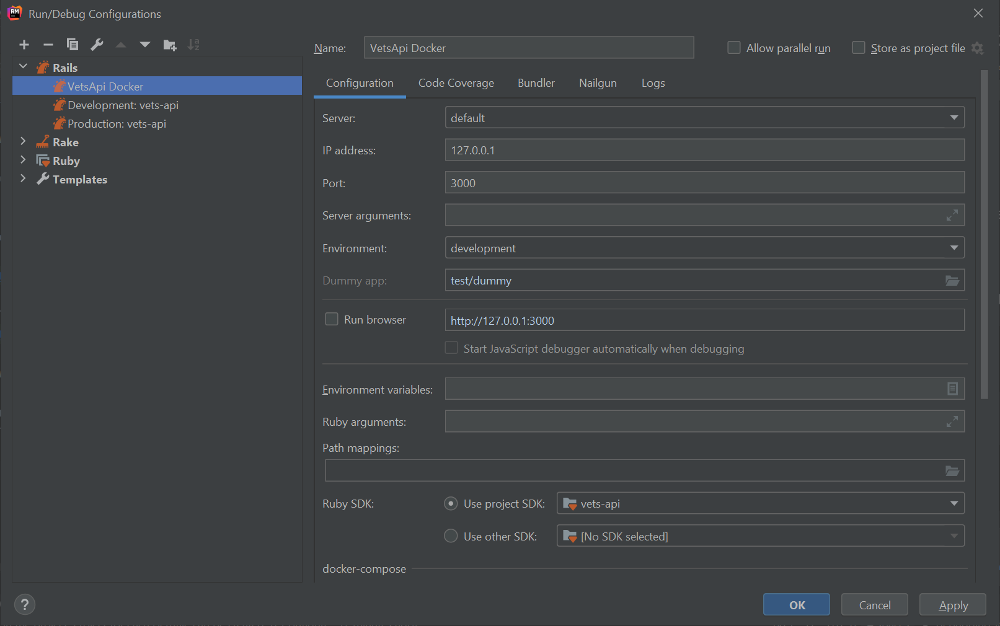
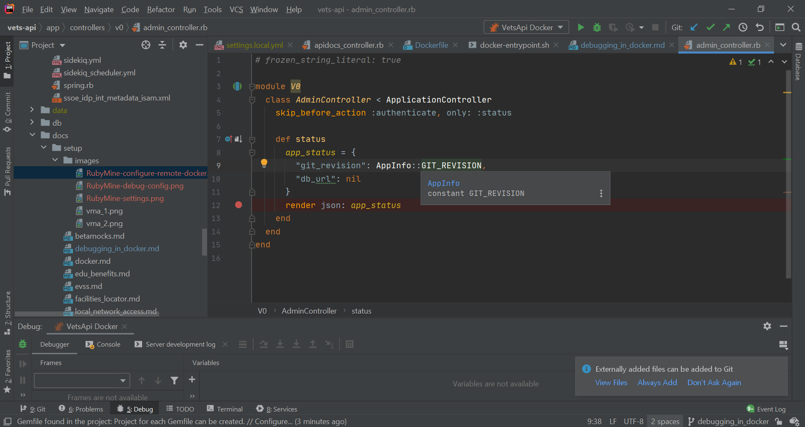

Debugging with Docker RubyMine Windows
Debugging in Docker, useful for windows developers.¶
UNSUPPORTED. These are community-generated steps. YMMV. These instructions assume you are using RubyMine, an IDE from JetBrains. If you are using another IDE, like VS code, expect to to work through some issues.
You can get it here: https://www.jetbrains.com/ruby/
When developing with Windows you need to ensure that your clone pulled down all your files with unix style line endings. To check, from git bash use the file utility:
1 2 | |
1 2 | |
https://www.cylindric.net/git/force-lf
The main readme describes setting up (touching) your certs. Make sure you do that.
API keys:¶
go to: https://developer.va.gov/ and click the 'Request an API key' button. You will receive an email with your API key that you will use in Postman as well as in the setup in settings.local.yml below.
.env File¶
Create a .env file in Rails root and add the following code:
1 | |
Settings.local.yml¶
Create a settings.local.yml file. Here is a sample.
1 2 3 4 5 6 7 8 9 10 11 12 13 14 15 16 17 18 19 20 21 22 23 24 25 26 27 28 29 30 31 32 33 34 35 36 37 38 39 40 41 | |
1 | |
Now it is time to do your initial build. You need to do this before configuring RubyMine because the image must be built in order for RubyMine to be able to scan it for gems. Run following from Rails root (this will cause the PUMA server to come up as well):
1 | |
1 | |
1 | |
Eventually Puma will come up and you can hit an endpoint in a browser at: http://localhost:3000/v0/status
Verify that it returns:
1 | |
1 | |
Open Ruby mine and open the settings page (File -> Settings -> Ruby SDK and Gems).

Select '+' -> 'new remote'. Choose the 'Docker Compose' radio button and 'vets-api' for the service.

Now we are ready to set a breakpoint and debug in RubyMine via the Docker container.
Run -> debug... -> edit configurations Select '+' to add a new rails configuration. Name the debug configuration (VetsApi Docker) and accept the defaults.

Set a breakpoint in the AdminController.

Now, run the following endpoint and ensure that the breakpoint is hit:
http://localhost:3000/v0/status
Debugging in RubyMine ONLY brings up PUMA. So, if you need to run sidekiq you will need to log into the container using the bash scripts and run commands such as:
1 | |
Interacting with the shell:¶
Create the following scripts and run them from a GitBash terminal. They can be placed wherever you want as they are used to connect the vets-api Docker container.
go.bash (connects as vets-api user)
1 2 | |
rgo.bash (connects as root user)
1 2 | |
Allows you to interact with the application from the shell like:
- rake lint
- rails console
For more details see: native instructions
Viewing swagger docs¶
1 | |
Create a .env.local file in developer-portal root:
1 2 3 4 | |
Run: - npm install - npm start
Set up your SSH keys: Follow these instructions for generating and setting up your SSH public and private keys.
Once these keys are generated you will need to request environment access.